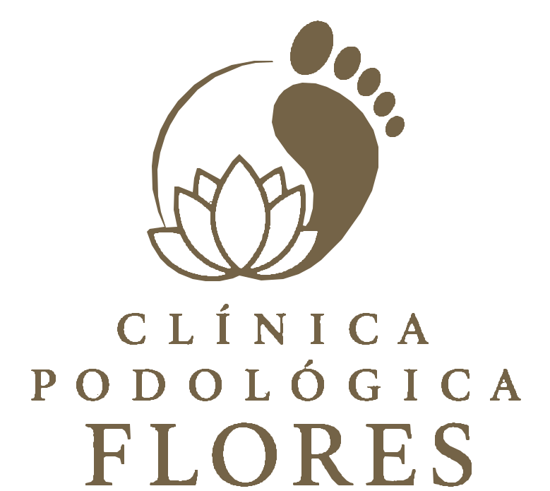

Preventiva
Podologia clinica basica o preventiva
- Valoracion y diagnostico.
- Asepsia y desinfeccion.
- Limpieza de surcos y onicotomia.
- Remocion de durezas y callosidades.
- Pulido, desinfeccion final e hidratacion.
- Educacion e indicaciones.

ReservarCatalogo de servicios
Brindamos atencion podologica integral en la comodidad de su hogar, con altos estandares de higiene, instrumental esterilizado bajo normativa MINSAL y atencion personalizada para cada paciente.
Preventiva
Adolescentes
Diabetes
Hongos en las uñas
Engrosamiento ungueal
Una encarnada
Bienestar
Complementario
Tratamiento complementario para uñas afectadas por onicomicosis mediante gel medicado.
Valores preferenciales
Valores preferenciales para familiares atendidos el mismo dia.
Compromiso